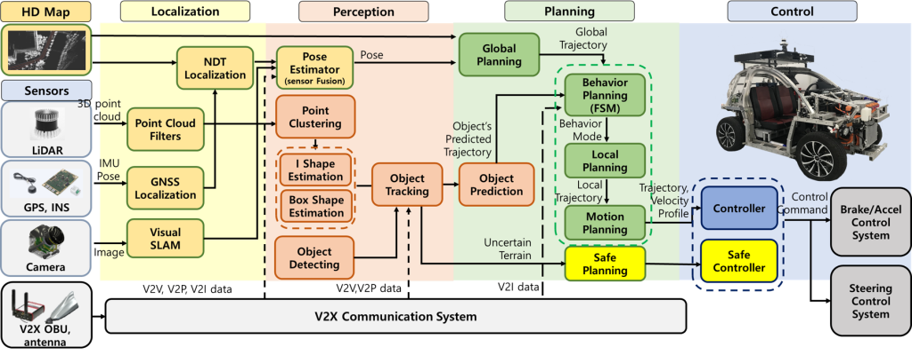
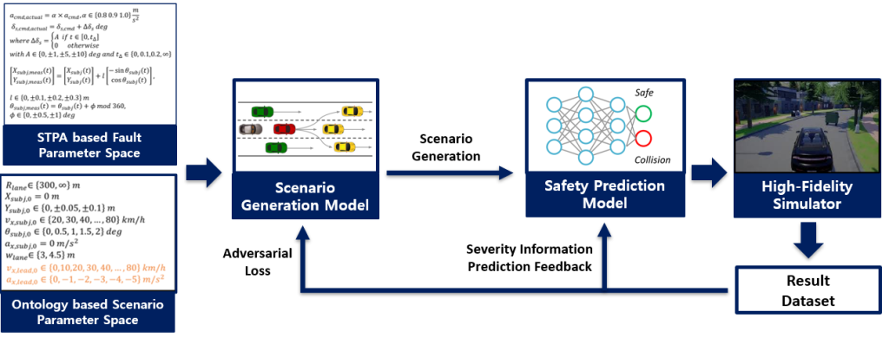
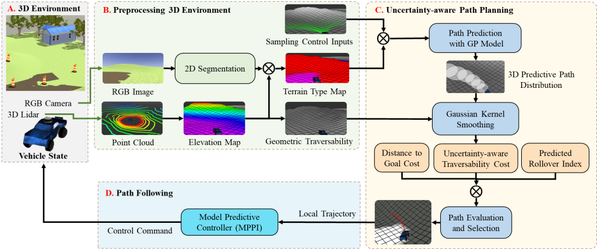
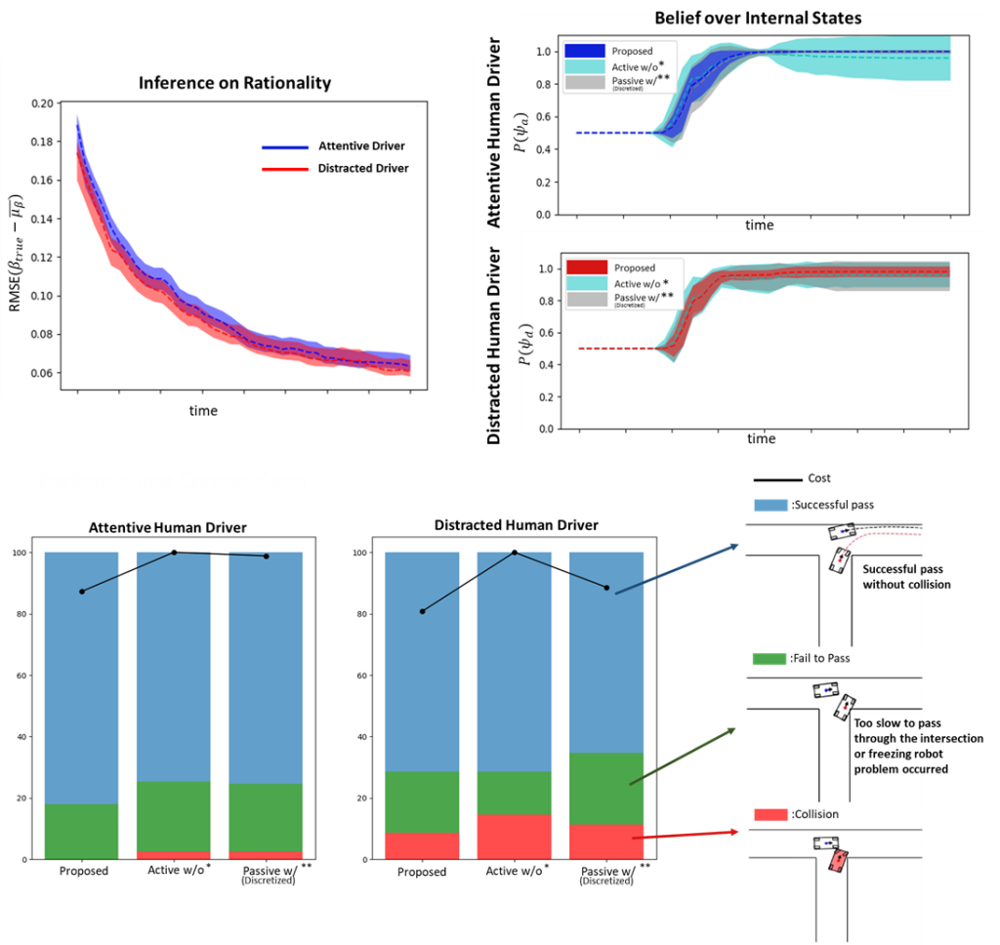

A self-driving car, also known as an autonomous vehicle (AV), connected and autonomous vehicle (CAV), driverless car, robo-car, or robotic car, is a vehicle that is capable of sensing its environment and moving safely with little or no human input.
Self-driving cars combine a variety of sensors to perceive their surroundings, such as radar, lidar, sonar, GPS, odometry, and inertial measurement units. Advanced control systems interpret sensory information to identify appropriate navigation paths, as well as obstacles and relevant signage.



Viewpoint-aware Visibility Scoring for Point Cloud Registration
- Main concern: How to improve the accuracy of point cloud registration for loop-closing in SLAM by effectively addressing occlusion challenges
- Research Goal: Improving point cloud registration accuracy for partial overlap scenarios
- Develop a visibility scoring function to assess point cloud visibility from counterpart viewpoints
- Apply weighted correspondences based on visibility scores to enhance point cloud registration accuracy

- Illustrative Example: Comparison result of proposed algorithm in partial overlap scenario
Autonomous Driving System Scenario-based Fault Injection Test Framework
- Main concern: How to efficiently find and respond to safety-critical scenarios which make the autonomous driving systems to fail
- Research Goal: Efficient exploration and response to safety-critical scenarios
- Knowledge-based and ontology-based fault scenario space generation
- Learning-based safety prediction for the autonomous driving system with fault
- Selective high-fidelity simulation based on safety prediction results
- Learning-based safety-critical scenario search through selective high-fidelity simulation
- Learning-based control parameter optimization for responding to safety-critical scenarios

Learning-based Uncertainty-aware Navigation
- Main concern: The major difficulties for navigation in 3D off-road environments first come from finding the traversable area in terms of the geometric or semantic properties of the terrain
- Research Goal: Develop safe and agile ground vehicle navigation for a 3D Off-road environment
- Safe and dynamically feasible path planning + tracking in 3D Off-road
- Consider geometric and semantic terrain properties
- Consider uncertain vehicle-terrain interaction learned from the driving experience

- Illustrative Example: Comparison result of safe and agile path planning and tracking in 3D off-road simulation environment


Interaction-aware Prediction and Planning
- Main concern: How to safely and effectively interact with uncertain human drivers
- Research Goal: Develop an integrated prediction and planning strategy for an autonomous vehicle to assure safety against human uncertainties
- Propose a Bayesian framework for reasoning about human uncertainty (i.e., driving styles, and rationality)
- Provide computation efficiency with sampling-based methods

- Illustrative Example: Simulation results of proposed algorithm

Kernel-based Metric Learning for Uncertainty-Aware Trajectory Prediction in Autonomous Racing
- Main concern: How to safely compete against opponent vehicles with diverse driving policies in autonomous racing scenarios
- Research Goal:
- To achieve effective uncertainty-aware trajectory prediction for opponent vehicles with diverse driving policies in autonomous racing